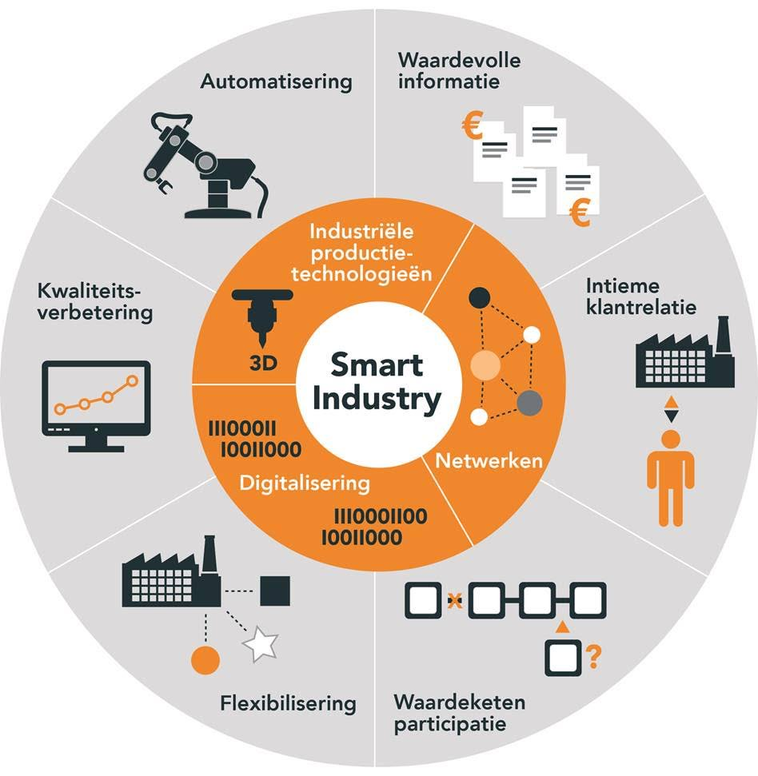
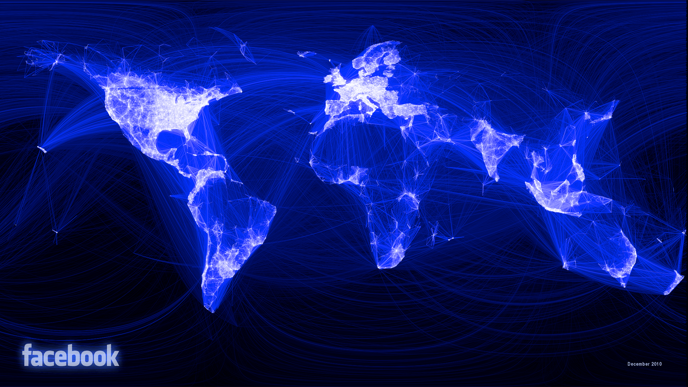
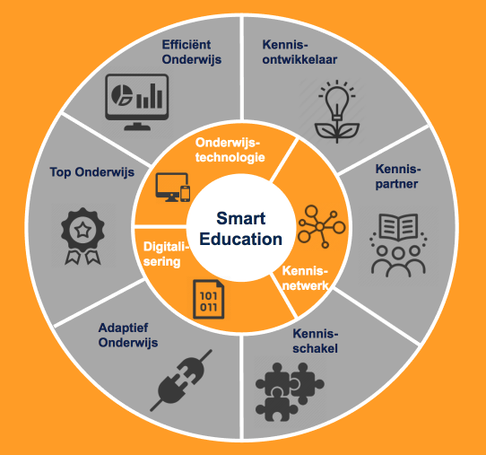
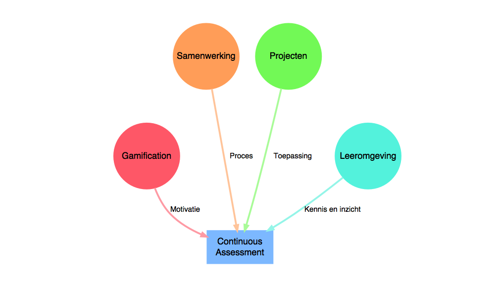
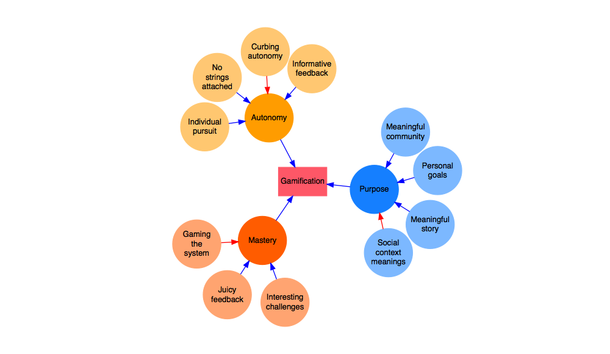

Smart Education
Samen bouwen aan toponderwijs
Witek ten Hove
|
 |
|
 |
|
 |
|
minorsmart.github.io/presentations/smartedu
Disruptie
Stel iemand laat in de Amsterdam Arena op de middenstip een druppel water vallen, een seconde later twee, een seconde later vier, etc. etc.
Hoe lang duurt het voordat de Arena tot aan de nok is gevuld met water?
Disruptie

Disruptie
Google Disrupted
Fragment uit Google CEO Sergey Brin, "I didn't see Artificial Intelligence coming.
Smart Industry
Bron: smartindustry.nl
Productietechnologie
Fragment uit Producing the world's first 3D-printed bridge
Digitalisering
Fragment uit Demo Process Simulate Human
Netwerken
Smart Education
Top Onderwijs
Didactisch Concept

Gamification

Top Onderwijs
Efficient Onderwijs
Beslissingen
Fragment uit Unconscious Bias @ Work | Google Ventures
Metadata
Startsurvey
Activiteit - Cummulatief
Activiteit - Individueel
Intermediate Survey
Learning Analytics
Discussie
Stelling: De kwaliteit van het Hoger Beroepsonderwijs moet en kan omhoog.